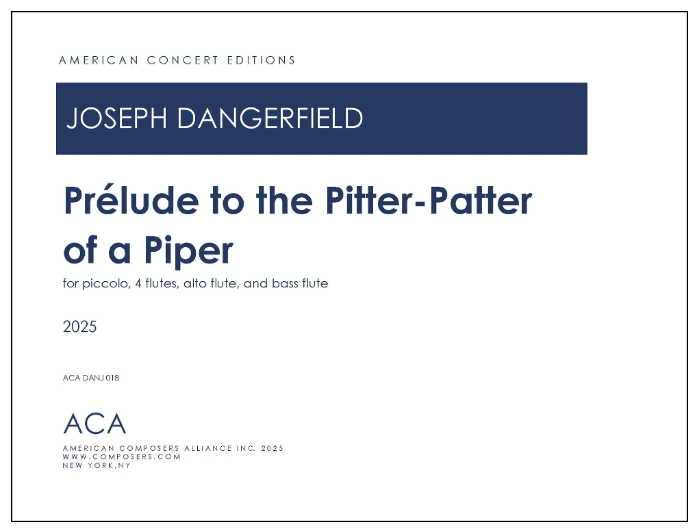

Prélude to the Pitter-Patter of a Piper is a fast-paced, high-energy work composed for Nina Assimakopoulos and the flute studio at West Virginia University. The piece exists in several arrangements: the original septet (piccolo, four flutes, alto flute, and bass flute — the version pictured here), a quartet (two flutes, alto flute, and bass flute), a quintet titled Pitter-Patter, Piper and Piano (two flutes, two alto flutes, and piano), and a nonet (piccolo, four flutes, two alto flutes, and two bass flutes).
Dedicated to Dangerfield’s daughter, Piper, the work serves as a whimsical, sonic translation of a chaotic domestic muse: the daily, erratic explorations of Piper’s cat, Nova Poe. True to its title, the music evokes the relentless “pitter-patter” of tiny paws darting across a room, capturing a feline sense of sudden curiosity, bursts of speed, and playful mischief, which includes small theatrical staging elements.
Musically, the composition is a fun exploration of timbre. Dangerfield utilizes a wide array of extended techniques to stretch the traditional boundaries of the instruments, creating texture-heavy soundscapes that imitate rustling, jumping, and chasing. The energetic, skittering lines challenge the performers’ synchronization and articulation, transforming the ensemble into a living, breathing canvas of kinetic motion. Audiences can expect a delightful, rhythmically driven experience that combines contemporary technical precision with pure, lighthearted fun.